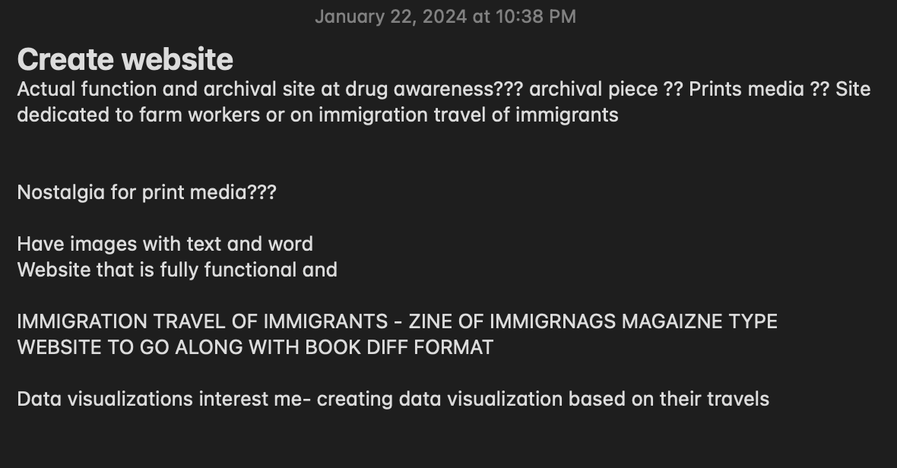
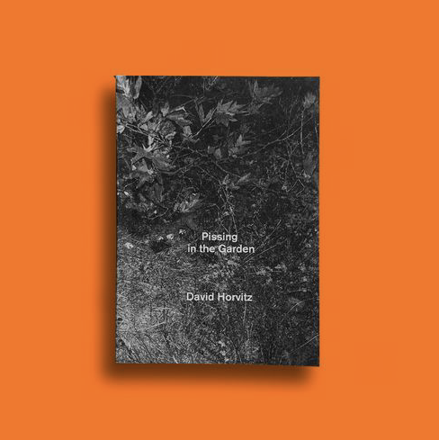
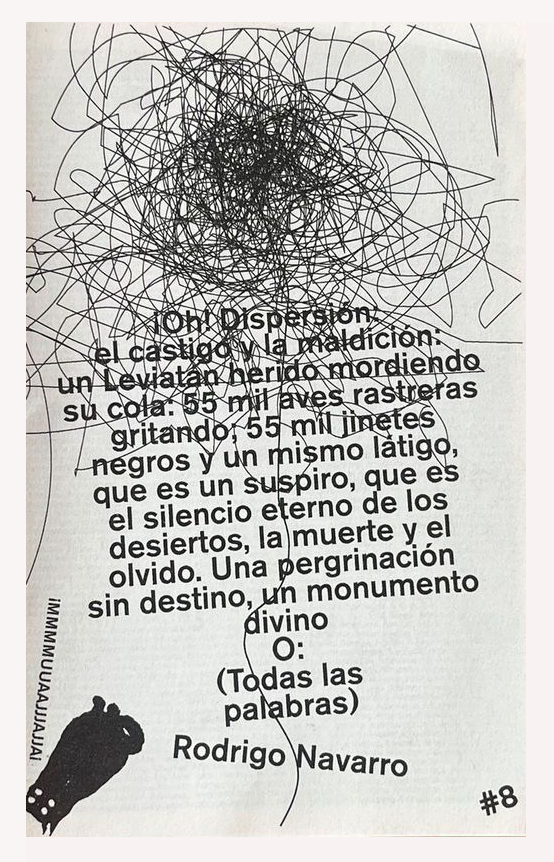

since last week i have a more refined my idea. i kept listing things i am interested in and what that would look like and here is what i have so far.

i think a good combination of skills would be to create a zine centered around immigration and perhaps include a website that incorproates a data visualiztion.
i would use a combination of :
- photography (dsler and phone)
- writing
- code (html, css, perhaps others)
i still am a bit back and forth with the subject matter but for now i just looked into different artists with similar uses of tools and came acorss a couple.
here are there links:
Gate negro edicions →

Pissing in the garden - david horvitz 2023

Diccionario Rodrigo- navarro 2023
there are all artists that use risograph as their main printing medium. i think i would aim for a similar aesthtic.